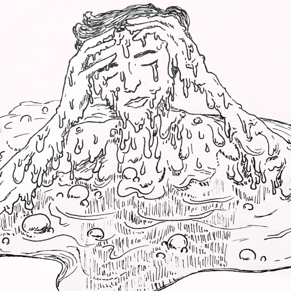
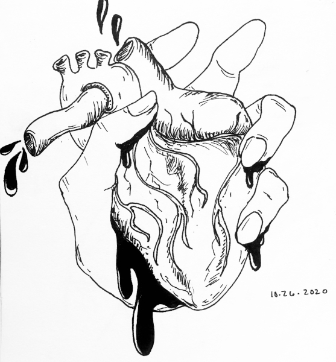
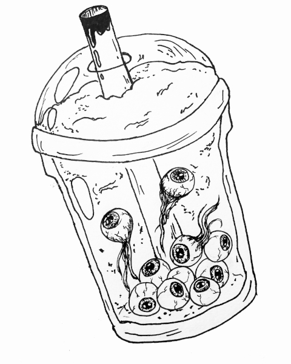
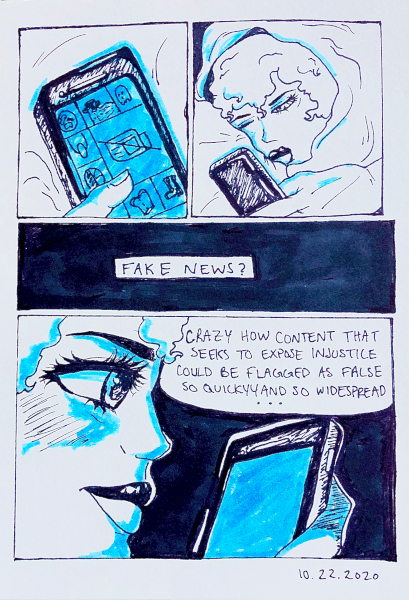
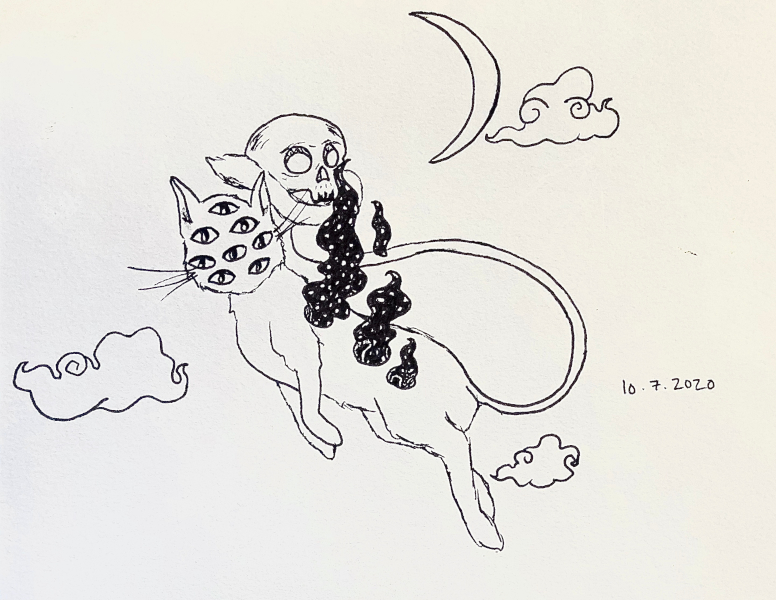
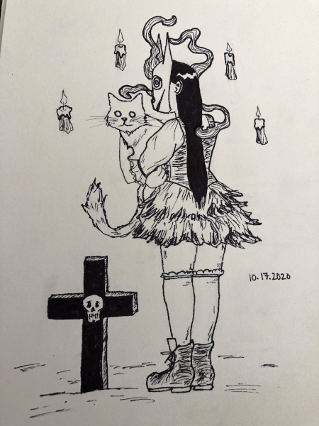

I used to only create from a dark place. For me art was my therapy, it was my outlet for negative emotions. It felt like art for me was a way of healing. When I was feeling down I didn't have to even think about it, I could just create.
Eventually I tried to change that, I didn't only want to be able to feel my most creative and most visionary when I'm sad. You don't want to be channelling only negative emotions for something you like to do. You don't want to be depressed for something you're good at. It was kind of a struggle to change it. I started looking for prompts. Putting myself into places where I had to create. Joining clubs. I get inspired when I create with other people.
There was one thing that I liked though. When you create as therapy, you get those thoughts out of your head. It allows you to look at your thoughts in a different angle. When you look at what you create, you can see: maybe those negative emotions weren't even so bad.
Now, what I want people to take away from my art is to be inspired to change. To be given an emotion that allows them to do something--whether that emotion is happy, sad, etc. A lot of my stuff is on creating futures, they're abstract. So it can be interpreted in many different ways, depending on where you're coming from. I just want you to feel like you're ready to take action like you're ready to change. Whatever that change means to you.
Other Works
Find more at https://www.hunterjpg.com/
{kind=link}